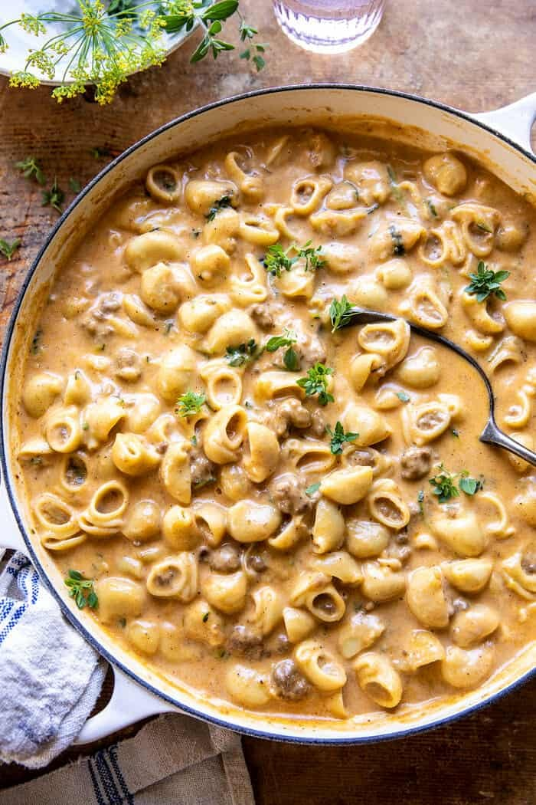

Healthy Hamburger Helper

Description:
This ground beef recipe is super simple to make with affordable pantry ingredients, doesn’t take much longer than the packaged kind, and it’s cooked all in one pot for fewer dishes.
Of course, there’s nothing wrong with eating packaged foods every now and then, but a LOT of people crave homemade Hamburger Helper, so I am here to bring you the best version.
Ingredients:
- 1 pound extra lean ground beef
- 1/2 medium onion chopped
- 2 heaping tablespoons tomato paste
- 1/2 teaspoon garlic powder
- 1/2 teaspoon chili powder
- 1/2 teaspoon salt
- 3 cups beef broth
- 1 cup uncooked elbow macaroni
- 2 cups freshly grated cheddar cheese
- Salt & pepper to taste
Instructions:
- Add the beef and onions to a soup pot. Cook over medium-high heat until the beef has browned (about 7-10 minutes), breaking the meat up with your spoon as you go along. If there's a lot of excess fat, spoon most of it out.
- Stir in the tomato paste, garlic powder, and chili powder.
- Add in the beef broth and increase the heat to high. Once it starts boiling, add in the macaroni.
- Reduce the heat so it's not furiously boiling (a rapid simmer is good). I ended up cooking mine over medium heat.
- Let it cook uncovered until the pasta is tender and most of the liquid has been absorbed (about 13-15 minutes). I stir it every couple of minutes.
- While it's cooking, grate the cheese (this saves prep time at the start of the recipe).
- Take the pot off the heat and stir in the cheese. Season with salt & pepper as needed. I let it sit for a couple minutes prior to serving (soaks up the sauce and flavors more), but you can serve it right away.
Nutrition Information:
Yield: 12
Serving Size: 1 muffin
Amount Per Serving: Calories: 222 Total Fat: 9gSaturated Fat: 2gTrans Fat: 0gUnsaturated Fat: 6gCholesterol: 31mgSodium: 220mgCarbohydrates: 35gFiber: 3gSugar: 15gProtein: 5g
Home page